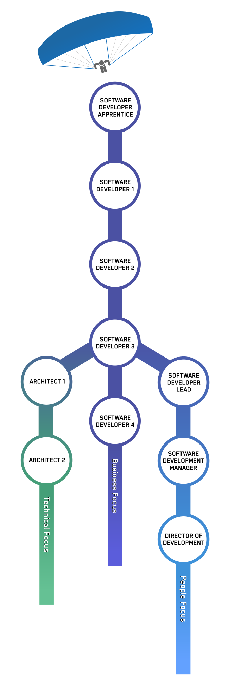

Learn
How We Support Your Learning
Coaching
Every developer is assigned a Software Developer Lead as a coach. Think of this coach as more of a mentor than a manager. You meet weekly to focus on your technical and career development. This coaching isn’t about performance management. It’s about how we can support your growth.
Annual Education Budget
Every year you receive $3,000 to spend on career development. Some recent education budget purchases include online courses in software design & architecture specialization, tickets to a DevOps conference, leadership development training courses, and many new books for our library.
Reading Culture
Our growing library is home to hundreds of books on design, development, data science, and more. Want a book? We’ll order it for you. This allows us to host book clubs on topics like Domain Driven Design, or advanced refactoring methods and architecture.
Internal Events
We hold Hack Days every six weeks, where the whole company has the freedom to tinker and learn about new technology. All team members regularly host Lunch n’ Learn talks on topics like serverless deployment of machine learning models, introduction to data science, retail industry overviews, and fun workshops like Spanish 101.
Developer Growth Tracks
Leveling up doesn’t necessarily mean moving into management.
During your interview process, we work with you to understand your skill set and where you want to grow. We then set a plan to advance you into the type of work you are most interested in doing. There are many opportunities for to have a discussion on your preferred career path throughout your time at Nulogy.

Understanding Differences in Paths
Interested in seeing how your skillset fits in with our levels? Flip through our descriptions to learn more.
Apprentice
-
We run an apprenticeship program where developers are paid to learn for three months, with the intention to transition into a full time role. This is a great opportunity for those who are fresh out of school or a bootcamp and are looking for technical mentorship in their very first software development position. Please keep an eye on our careers page for more information.
Software Developer I
Learning Catalyst
You are a catalyst for your team's learning culture. You will be expected to constantly share new learnings, inspiring others to do the same. As an SD1, you are meant to be a significant contributor to the team’s velocity, delivering clean code.
Software Developer II
Collaborator
You model what it means to be a great collaborator. In this role, you will be raising the team’s production capacity. You will challenge the team to deliver valuable well-designed code.
Software Developer III
Expert
You deliver high-quality software at a sustainable pace. As the technical backbone for your team, you identify and take actions towards becoming a highly-performant team. Alongside this, you are a significant contributor to your team’s velocity.
Software Developer Lead
-
In addition to coding at the SD2 level or higher, you act as a coach and guide for developers. Through 1-1’s, training, and mentorship you will support and grow the developers on your team. As a leader, you will assist with the delivery of major projects and manage change across the Product Development organization.
Architect
-
You shape the technical direction of our products through experience, research and experimentation. Architects at Nulogy operate alongside our delivery teams, preferring to mentor better technical decision making rather than deciding in a vacuum. You will guide the long term technical vision of our products to align with our business goals.
Software Development Manager
-
You will hire, grow and retain the top talent in the industry. Software Development Managers at Nulogy oversee the leads and developers on multiple delivery teams, helping to align people to company goals. You will work with other Software Development Managers to improve engineering processes and practice across Product Development.